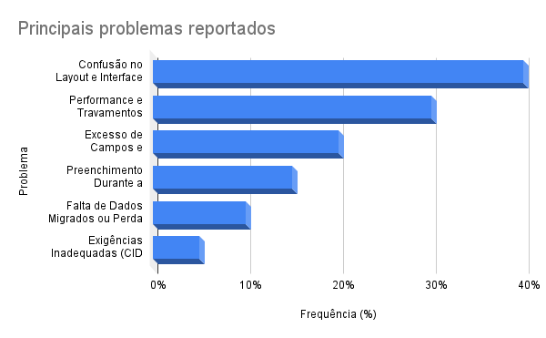

Acessar
Acessar
Pop-ups inteligentes para atendimento médico
Redesign do fluxo da fila de pacientes para aumentar a produtividade médica com pop-ups proativos e lógica contextual.
2,6consultas/h (antes 1,71)
Product Designer com foco em estratégia, impacto e colaboração.
Traduzo objetivos de negócio em experiências úteis e mensuráveis.

Prontuário, atendimento e produtividade médica.
Acessar
Redesign do fluxo da fila de pacientes para aumentar a produtividade médica com pop-ups proativos e lógica contextual.
 Acessar
Acessar
Componente flutuante que centraliza IA, chat e suporte no prontuário, pensado para evoluir sem depender da refatoração total da interface.
 Acessar
Acessar
Alertas, mensagens e ações pendentes reunidos em um só lugar para o profissional de saúde.

AcessarLevantamento estratégico das dores reais de profissionais da saúde no uso do prontuário digital.
Sou um Product Designer apaixonado por criar soluções que fazem a diferença. Com experiência em estratégia de produto, pesquisa com usuários e design de interfaces, conecto objetivos de negócio com necessidades reais dos usuários.
Acredito que o melhor design é aquele que resolve problemas de forma simples e elegante, sempre com foco no impacto mensurável.